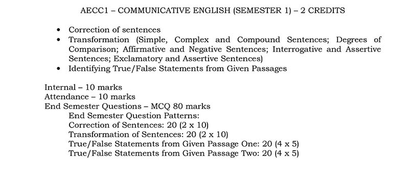

Relevant sections from Wren and Martin
This course is only there in semester 1. Instead of choosing English, you may also choose either Bengali or Hindi in semester 1 AECC. In semester 2 AECC, you compulsorily need to choose Environmental Science as an AECC subject. There is no AECC course in semesters 3 to 6.
The evaluation for this course is such that you only need to answer questions in an OMR sheet. For each question, you will have four options and you need to choose the correct option by circling the correct option (A, B, C or D). You do not need to write any words or sentences in the evaluation tests for this course.
The information on this page was last updated on 20 December 2021.
Official website of Ananda Mohan College is http://anandamohancollege.ac.in